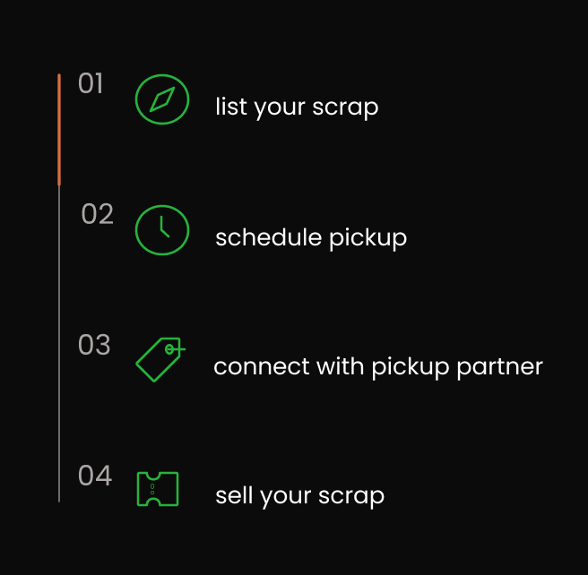

In today’s world, where sustainability is more important than ever, managing waste efficiently has become a priority for individuals and businesses alike. If you have old metal, plastic, paper, or electronic waste piling up at home, why not turn it into cash while contributing to the environment? Enter Eco Mitra, the ultimate scrap selling app that connects you with local scrap merchants, making eco-friendly waste disposal effortless.
Eco Mitra is a modern solution to an age-old problem—how to responsibly dispose of scrap while making money from it. Whether you have old newspapers, unused metal, e-waste, or plastic, Eco Mitra lets you list your scrap materials on its platform. The app connects you with verified pickup partners in your area who are willing to buy your recyclable waste at fair market rates.
Eco Mitra is designed with user-friendliness and efficiency in mind. Here’s a quick guide on how the app works:
Selling scrap isn’t just environmentally friendly; it’s a great way to earn some extra cash. With Eco Mitra, you can profit from items that would otherwise collect dust in your garage.
Eco Mitra accepts various types of scrap, including:
The environmental impact of irresponsible waste disposal cannot be overstated. Each year, millions of tons of scrap materials are discarded in landfills, contributing to pollution and resource depletion. Eco Mitra aims to reverse this trend by encouraging recycling and reducing the overall carbon footprint.
Getting started is easy. Follow these simple steps to begin selling your scrap and making a positive environmental impact: